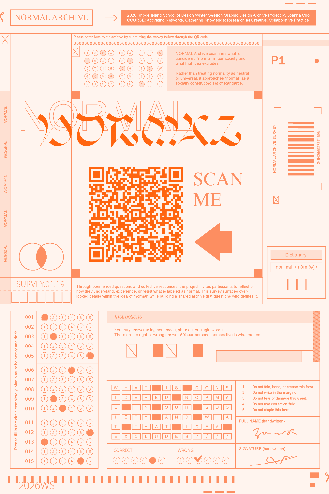
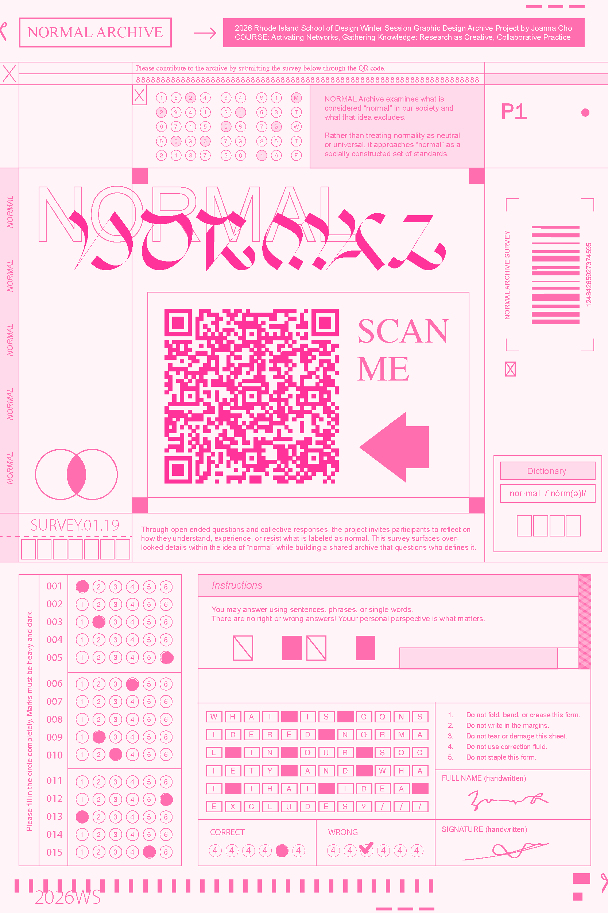
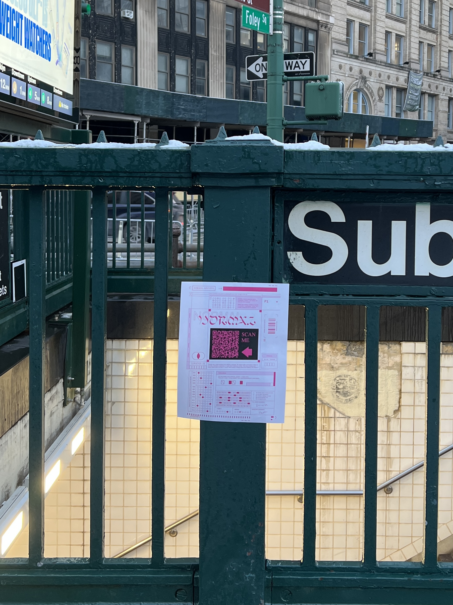
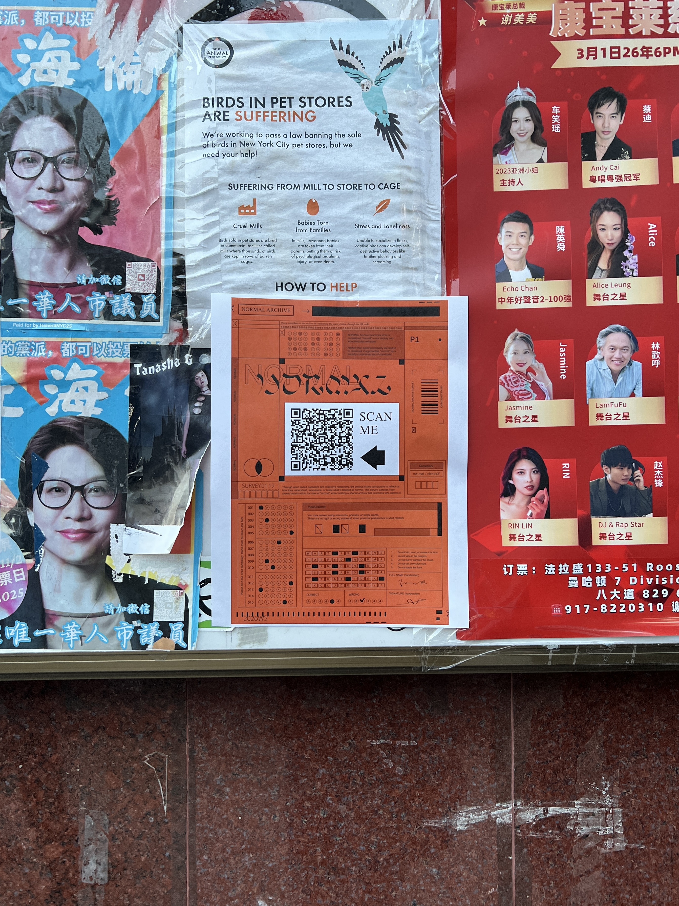
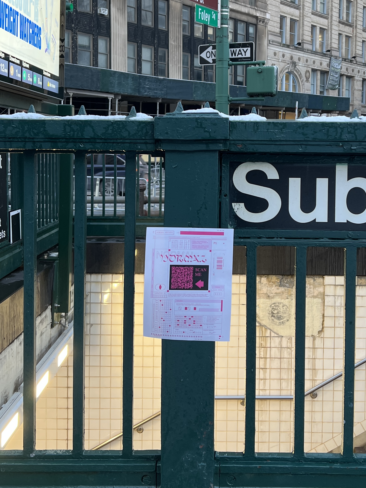
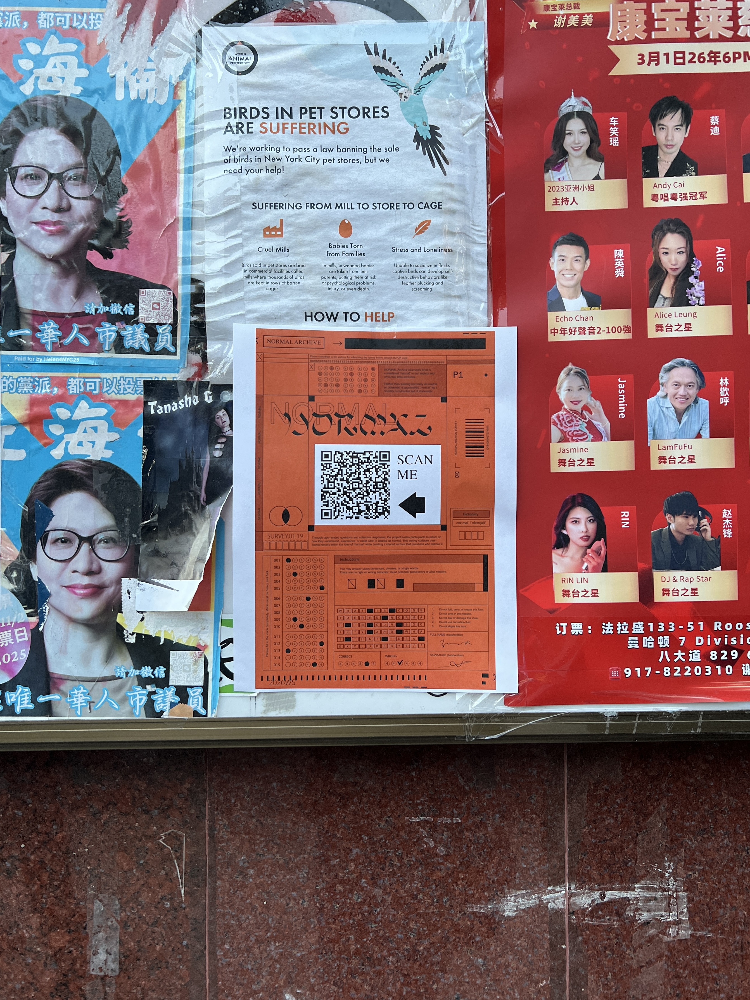

The posters were displayed in public spaces across New York to collect survey responses from a broad audience. Additional responses were gathered through Reddit and social media. This project explores how the public defines and understands “normal.”


 


